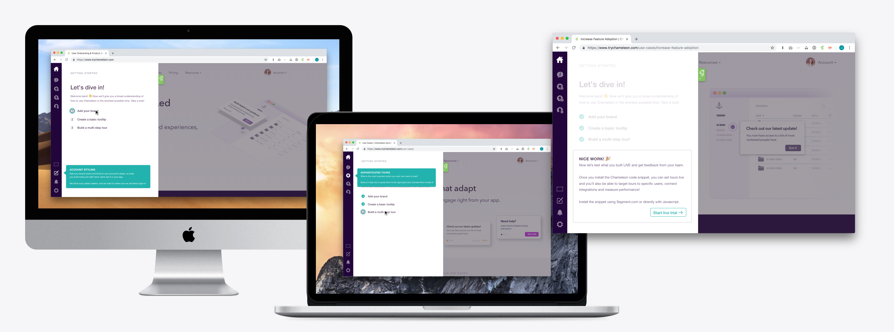
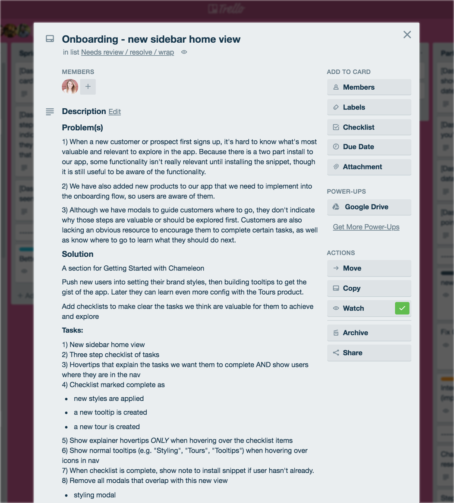
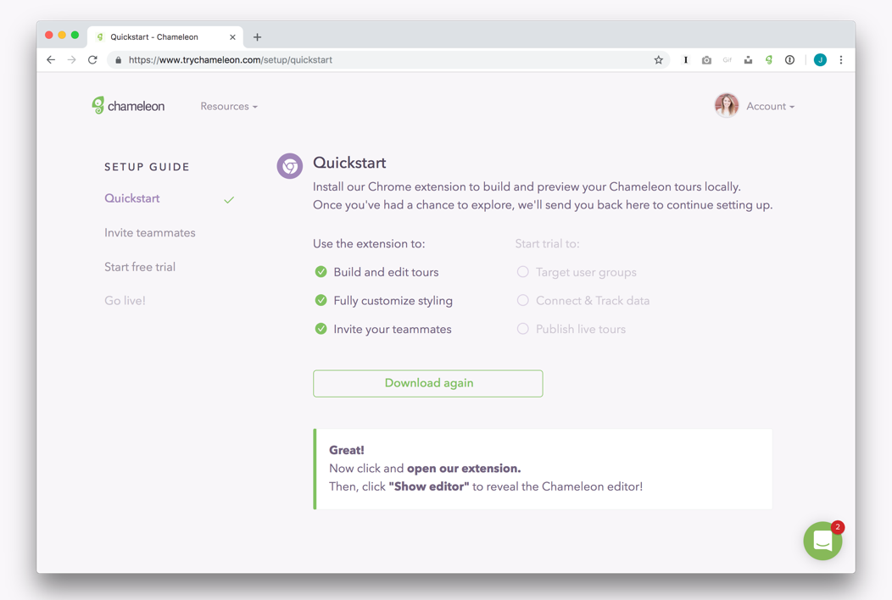
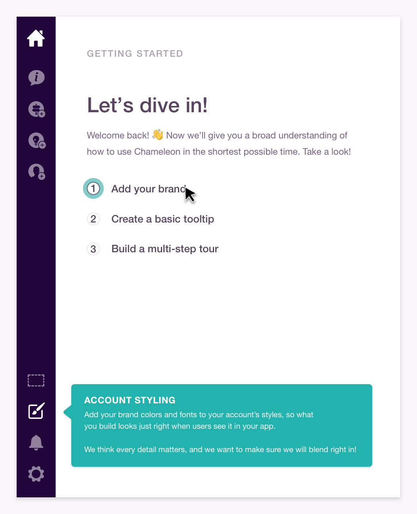
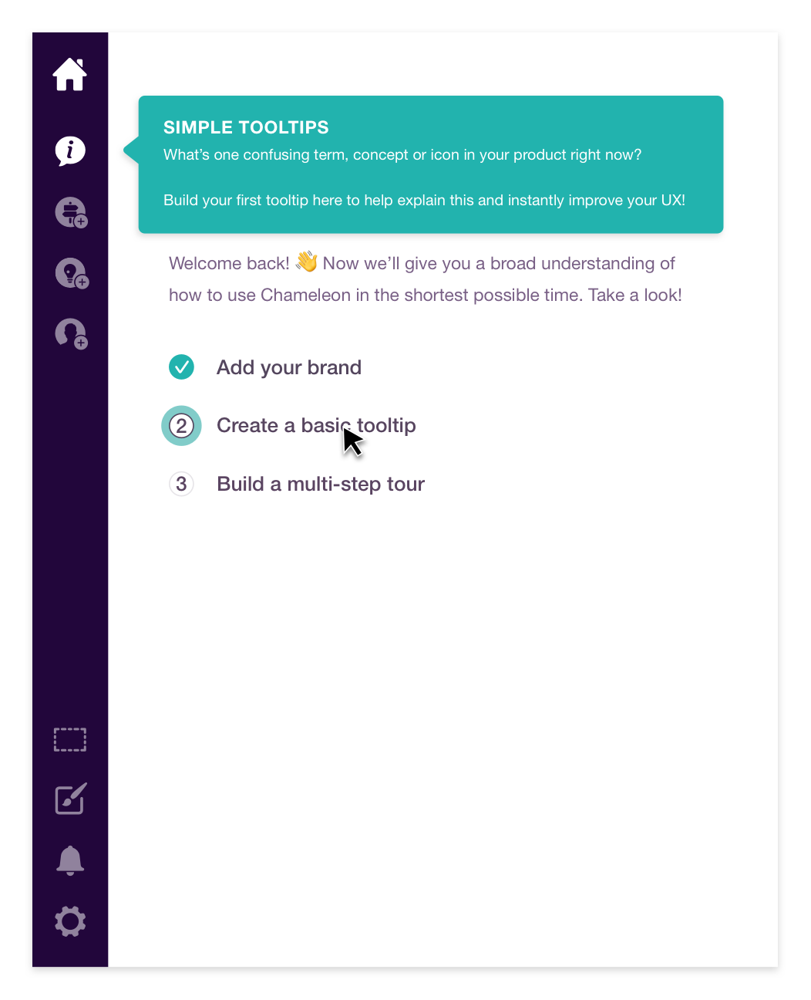
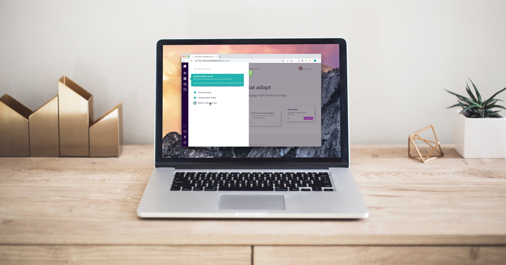

Chameleon onboarding
Chameleon is a tool for in-app product marketing and guidance. We help our customers, typically other SaaS companies, share the value of their product with their users through product tours. Onboarding is one of the most common use cases that prospects seek out our tool. They want to teach their users about their product quickly, and get them engaged and invested in what they have to offer.
In late 2018, we introduced more self-service pricing tiers to help more prospects get started without having to chat with us first. And like our customers, we noticed these users were struggling to get fully set up. This meant they couldn’t feel the value Chameleon could have for their app. Not fully installing led to an increase in churn. We realized we needed to re-evaluate how we onboard our self-serve users.

Investigating the problem
We knew what the crux of the problem was, completing our installation process, but we needed to learn why installation and finding value were a struggle. First, we dove into the data. We wanted to learn if there were other points users were more likely to churn, or if there were actions that made them more likely to convert after their trial concluded. What did they have to see or do to become a Chameleon promoter?
Understanding our "aha moments"
We also mapped out what we thought our “aha moments” were (where a user understands the value of a feature), then assessed what was and wasn’t working in our current onboarding flow with user feedback.
We spoke with customers, prospects, ex-prospects, etc. to help us answer several questions:
- Why did they seek out a tool like Chameleon? (what was the problem they sought to solve)
- What did they want to achieve with this tool? (what was their goal)
- What features were important to them in using a tool like this? (did they have a checklist for what they needed or to compare products)
- How did they find setting up Chameleon?
- What felt simple or frustrating?
Onboarding goals
- Define Chameleon’s “aha moments” (or when a user understands the value of a feature or the product as a whole)
- Drive motivation, or help our users find “aha moments” in our onboarding flow as soon as possible
- Increase number of users fully installed while maintaining lifetime value



What we learned
Checklists were working
Our current onboarding flow begins with a checklist right after signing up. In the checklist, a user is immediately prompted to download our app via Chrome extension. Our customers continued to tell us they liked having a list to return to, so they knew what they still needed to accomplish. It helped them feel like they always had a resource available to them as they were learning to navigate something new. However, once downloading the app, we had additional instructions in the editor to guide you in using it. This is where users got a bit lost. It was difficult to know how much to explore in the app before returning to the original checklist. What took priority? There was also a disconnect in how to get from the setup checklist to the app and back.
Points of friction
We also confirmed a couple other points of friction.
First, our installation occurs in two parts: with a Chrome extension and then a snippet of code. We do this so anyone, technical or not, can get started with the basics. The extension allows a user to see where the Chameleon editor sits on their own app, to get acquainted with building tours, and can show what steps they’ve built will look like in their own UX. Installing the snippet, part 2, can often involve other teammates. Needing additional people tends to cause a delay in the installation process.
Second, if a user never fully installs our code on their app, they aren’t able to experience our largest “aha moments.” For example, their users can’t see any tours until this occurs, meaning our prospects are blind to any metric or user behavior changes that could prove Chameleon’s value.
Since both tended to be necessary for our users to find success, we couldn’t avoid these tasks. We just had to find ways to motivate users to want to complete them.
What we changed
Motivate our users to continue
We needed to help users gain better insight on why they should keep going. To do this we looked to better connect our setup guide (installation) with learning the gist of the app. This was our opportunity to share the value of Chameleon quicker.
A user downloads the Chrome extension, then instead of individual modals in the app guiding you to take one action at a time, with no clear navigation or structure, I created a “Getting Started” home screen. In it was a new checklist with the three most important things you should and could do prior to installing the snippet and why they were valuable. Clear visibility, all in one place.

Get users to feel invested in Chameleon
For task 1, I asked users to style their tips and tour steps to match their brand. This task had minimal UI to learn. It also set the stage for each subsequent task because once your account styling looked native, every tip or step you built next would also.
And while we were accessible on our users’ apps, our presence there didn’t necessarily encourage quality Chameleon usage. We found (and learned we actually preferred) when users built product tours with intention, mapped their use cases, or at least set goals, that this planning made for more successful tours.
On the flip side of friction is investment. With every task you successfully get your user to accomplish, the more invested they become. Ideally, they’d reach several “aha moments” so that when they tasked with something more difficult, like asking their developer to help them install our snippet, they were motivated to do so. The snippet meant users could set their tours live. A live tour tended to commit them because they wanted to wait for results and watch their users’ behavior change.
Looking ahead
I am so eager to learn how useful (or not) our onboarding updates are, so we can understand where to iterate next. Because this is a project in progress, I don’t yet have data to validate our research and assumptions. However, if this revised flow does improve our intended metrics, I have already begun to think about how we can create new tasks to improve engagement post install. We don’t just want more users, we want to enable more users to be successful.
